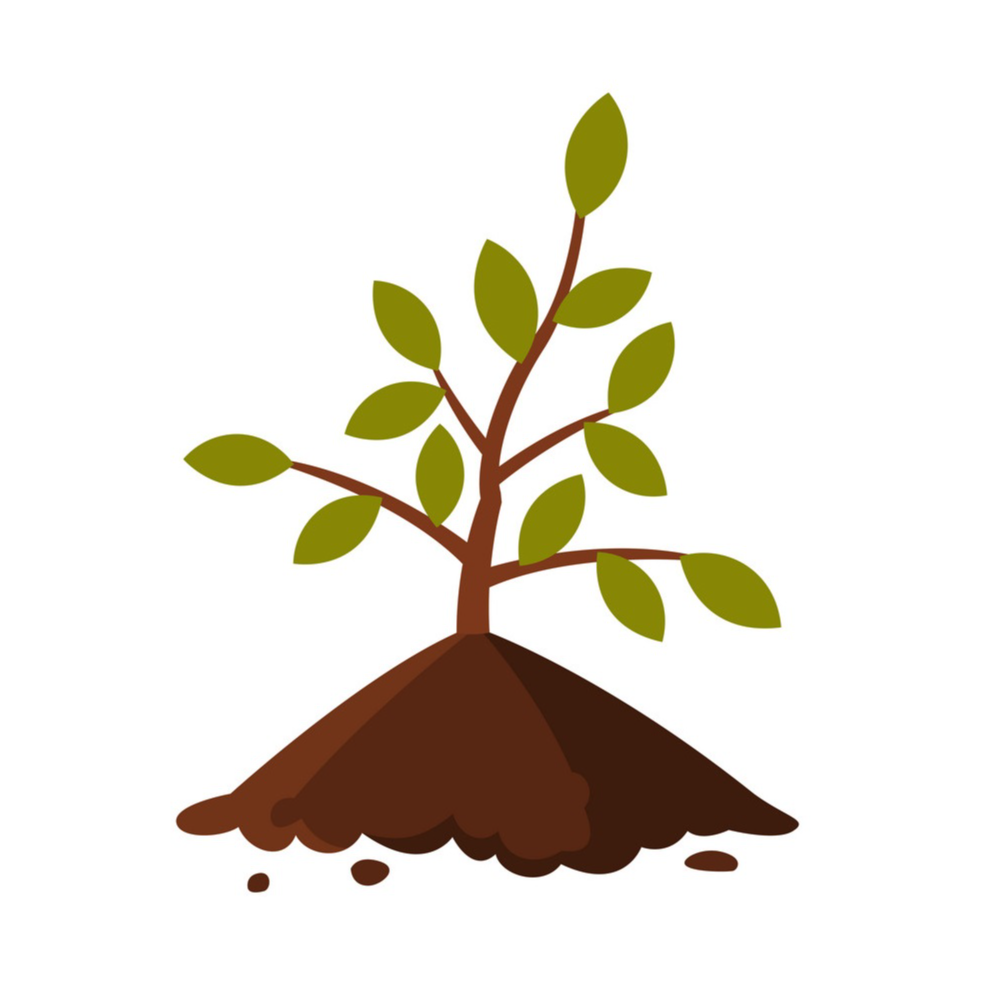

"Save Trees, Save Earth, Save Lives"
Adopt a Tree

Save Trees Foundation (STF) is a new organisation with the initiative of planting more tree saplings to make out planet earth a better place for living.
As in recent time, we have seen a decline in the forest cover so we the people in STF have
have been pioneering community led forestry restoration. We make the greatest difference by supporting emerging community based groups to grow and become independent forest conservation organisations. We recieve valuable donations from our supporter to help us in our initiative to conserve our planet.
This way, we restore and conserve forests, and promote cultures of forest stewardship for generations.
Our partners in Africa and the UK restore forests and woodlands, conserve habitats rich in biodiversity, and help communities who rely upon forests develop prosperous sustainable livelihoods. With STF, you can plant the right trees, in the right places, and for the right reasons, everyday.
We share a vision with many millions of people, of a world in which trees and forests flourish and their vital role in sustaining planetary and human well-being is valued. If we come together, we can realise this future.